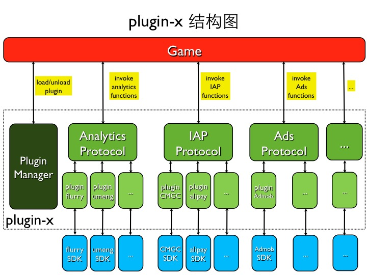

Plugin-x 是为了方便游戏开发使用各种第三方 SDK 的一个 C++ 框架。在这个框架下面，可以很方便的将第三方 SDK 封装为一个插件(plugin)；而游戏开发者，也可以很方便的使用各种功能的插件(plugin)。
Plugin-x 主要完成的工作就是为各种第三方 SDK 功能封装出 C++ 接口，这样在游戏逻辑代码中就可以直接调用插件提供的扩展功能了。
Plugin-x 的结构需要满足以下几个需求：

实际上在 Plugin-x 重构前，已经能够满足前面提到的大部分需求。但是在之前的框架下面，每个插件都必须要编写 C++ 代码，同时，还要完成 C++ 代码与 Java/OC 代码之间的交互。
所以这次进行重构的目标就是让每个插件都不用再编写 C++ 代码。这样能带来两个好处：
为了把插件中的 C++ 代码摆脱掉，同时游戏又可以调用插件自定义的接口，就需要在 Plugin-x 的框架中实现简单的反射机制。
Plugin-x 中使用到的只是简单的反射功能：通过函数名调用函数。
C++ 层接口设计：
void callFuncWithParam(const char funcName, PluginParam param, ...);
std::string callStringFuncWithParam(const char funcName, PluginParam param, ...);
int callIntFuncWithParam(const char funcName, PluginParam param, ...);
bool callBoolFuncWithParam(const char funcName, PluginParam param, ...);
float callFloatFuncWithParam(const char funcName, PluginParam param, ...);
插件自定义接口的限制：
- (void) setGender: (NSNumber*) gender;
- (void) setUserId: (NSString*) userId;
- (void) logTimedEventBeginWithParams: (NSMutableDictionary*) params;
在重构前的框架下，每个插件通过 static 变量最早初始化的特性实现了插件的自动注册功能。
而删除掉插件的 C++ 代码之后，自动注册的功能没法继续使用。插件的加载流程也有相应的改动：约定插件名称与实际的类名相同。